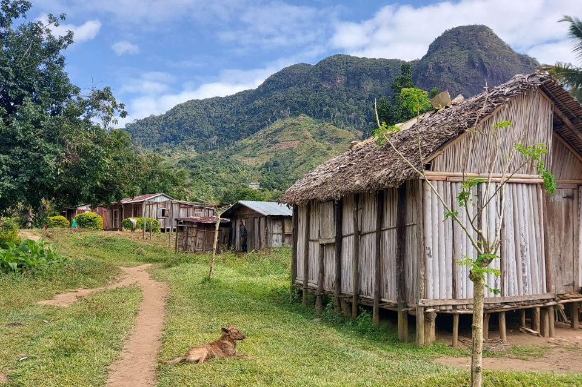

About

Kayla Kauffman (she/her)
Postdoctoral Scholar
Oceans | Doerr School of Sustainability
Stanford University
Research Interests
Community Ecology ⚬ Disease Ecology ⚬ One Health
My passion lies in the intersection of wildlife, domestic animal, and human health, particularly in the context of zoonotic diseases. Fueled by experiences in animal agriculture, wildlife disease research, and travel to regions facing deforestation and zoonotic disease threats, I’m dedicated to becoming a leader in the field of One Health.
My postdoctoral work is on schistosomiasis, a Neglected Tropical Disease infecting over 250 million people globally. I am working to develop win-win-win solutions for poverty, malnutrition, and disease sub-Saharan Africa using fish-rice co-aquaculture. Additionally, I am using theoretical and applied modeling approaches to assess schistosomiasis transmission risk in a changing work and test control strategies.
My Ph.D. research focused on pathogens found at the human-animal interface in the area surrounding Marojejy National Park in northeastern Madagascar. I used a combination of approaches – building transmission potential networks, testing interventions such as dog vaccinations, and employing theoretical models – to understand multihost disease dynamics and design effective prevention strategies.
The two key topic addressed in my dissertation work were:
- The environmental drivers of infection and multihost parasite sharing: What landscape and primary host features predict infection in primary host species and parasite sharing with secondary host species across a suite of hosts and parasites?
- The efficacy of vaccinating a reservoir host to control multihost species pathogens: How effective is vaccinating animal species that harbor zoonotic diseases (reservoir hosts) in controlling their spread to other species, including humans?
Ultimately, I believe in bridging the gap between theory and practice in disease control. By combining real-world data with theoretical frameworks, I aim to develop solutions that address neglected tropical diseases and emerging zoonotic threats, promoting healthy ecosystems and human well-being.
Research Mentors
Giulio De Leo
Oceans, Doerr School of Sustainability | Stanford University
Hillary Young
Ecology, Evolution, & Marine Biology | University of California, Santa Barbara
Charlie Nunn
Evolutionary Anthropology and Global Health | Duke University
Georgia Titcomb
Department of Fish, Wildlife, & Conservation Biology | Colorado State Univeristy, Fort Collins
Myrna Miller
Virology in Dept. of Veterinary Sciences | University of Wyoming